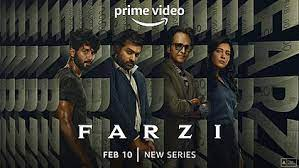

farzi web series
about web series : Farzi is a Hindi-language web series about a small-time artist who becomes involved in the world of counterfeiting after creating the perfect fake currency note. The series was created, directed, and produced by Raj & DK, who also co-wrote it with Sita Menon and Suman Kumar. It stars Vijay Sethupathi, Shahid Kapoor, Kay Kay Menon, Raashii Khanna, and Bhuvan Arora. The first episode aired on February 10, 2023, and the series has eight episodes.
season 1
episode 1
description : The first episode of Farzi is titled "Artist" and is about a small-time artist who comes up with a dangerous plan to save his grandfather's printing press. Michael, the artist's arch-nemesis, corners Mansoor Dalal, the counterfeiting kingpin, in the episode. Sunny's plan works, but there is no end to greed. Michael tries to get an anti-counterfeiting task force sanctioned

episode 2
description : Farzi is an Amazon Prime Video series about counterfeiting. In the show, artist Sunny is disillusioned by India's income inequality after failing to keep his grandfather's printing press running. Sunny teams up with his best friend Firoz to make counterfeit money, facing challenges from Mansoor, a gangster, and Michael, a cop
episode 3
description : In episode 3 of season 1 of the web series Farzi, titled "CCFART", Michael shows up at his son's birthday party and hires Megha to track down the person who made the sandwich note. Sunny and Firoz accept a deal that's too big for them.
season 2
episode 1
description : Farzi, titled "Dhanrakshak", Shivankit tells the story of his crush's father, Nishant, and his sher explains the difficulties of having a gift shop. Zakir sher then explains the Ruswai ka mela, and Parul tells stories about subtle flirting with her golagappe wala. Finally, Gopal Dutt's sher opens wounds for many people.
episode 3
description : Farzi Mushaira, Zakir Khan and his friends Hussain Dalal, Nishant Tanwar, Kirti Kulhari, and Shivankit Parihar discuss the relationship between alcohol and love, and its consequences. The episode also includes intoxicated shayaris
episode 3
description : In this episode, CCFART and Mansoor's crime syndicate engage in a chase and evade situation. Sunny stays on top of things and tries to take the steam out of Michael's operation. Sunny also adopts a risky plan called "Trojan Horse" to smuggle a huge shipment of notes to India.